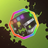
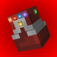
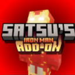

How it works#
Each custom gauntlet is a file in data/. The file name is its ID. You describe what counts as wearing it,
where each stone is drawn, and optional extras. While a player wears it, everything works like the real gauntlet:
| What | How |
|---|---|
| Stone menu | The Open Gauntlet key (G) opens it for the gauntlet in your main hand, otherwise the worn one, so gauntlets that are never held still work. It looks like the Infinity Gauntlet's menu unless the file has a gui. |
| Stones | All six, and custom stones, fit. No duplicates. Item gauntlets store them on the item (they stay with it). Power gauntlets store them on the player per gauntlet ID (they come back when it's put on again). |
| Abilities | With at least one stone inserted, the player gets infinity:, so stones are used and snapped exactly as with the real gauntlet. |
| Look | The other mod draws its object as usual. With a stone inserted, the optional render_layer (e.g. a glove) is drawn on top, and each stone as a small stone cube on a bone of the player model, following that arm's animation. |
An Infinity Gauntlet in the off hand or  Curios hands slot takes priority, then custom gauntlets in file name order.
Curios hands slot takes priority, then custom gauntlets in file name order.
Worked examples#
The first three are the real files from Infintrix and Infinity Protocol. Their six positions are the Infinity Gauntlet's own sockets, a good start for anything on the left hand.
Omnitrix with a glove
infintrix: glove is drawn under the stones.
{
"name": "Prototype Omnitrix",
"equipment": {
"power": "alienevo:prototype_omnitrix"
},
"slots": [
{ "origin": [7.65, 11.75, -1.15] },
{ "origin": [7.65, 12.85, -0.55] },
{ "origin": [7.65, 11.75, 0.15] },
{ "origin": [7.65, 11.75, -2.35] },
{ "origin": [4.55, 12.15, -2.65], "slim_origin": [4.55, 12.15, -2.65], "size": [0.9, 0.9, 0.9] },
{ "origin": [7.65, 11.75, 1.45] }
],
"slim_offset": [-1, 0, 0],
"render_layer": "infintrix:prototype_infintrix",
"powers": ["infintrix:infintrix"]
}The glove's render layer
A normal GeckoLib  Palladium render layer, with a slim arm version.
Palladium render layer, with a slim arm version.
{
"type": "geckolib:default",
"model": {
"normal": "infintrix:geo/prototype_infintrix.geo.json",
"slim": "infintrix:geo/prototype_infintrix_slim.geo.json"
},
"texture": "infintrix:textures/models/prototype_infintrix.png",
"bones": {
"head": "head",
"body": "body",
"right_arm": "right_arm",
"left_arm": "left_arm",
"right_leg": "right_leg",
"left_leg": "left_leg"
}
}Stones on a watch face
Infintrix's Omniverse Omnitrix has no glove. Its stones are thin slivers around the watch face, two rows of three.
{
"name": "Omniverse Omnitrix",
"equipment": {
"power": "aeo:omniverse_omnitrix"
},
"slots": [
{ "origin": [7.75, 16.15, -0.145], "size": [0.9, 0.25, 0.29] },
{ "origin": [7.75, 13.6, 0.288], "size": [0.9, 0.25, 0.29] },
{ "origin": [7.75, 16.15, 0.288], "size": [0.9, 0.25, 0.29] },
{ "origin": [7.75, 16.15, -0.578], "size": [0.9, 0.25, 0.29] },
{ "origin": [7.75, 13.6, -0.578], "size": [0.9, 0.25, 0.29] },
{ "origin": [7.75, 13.6, -0.145], "size": [0.9, 0.25, 0.29] }
],
"slim_offset": [-1, 0, 0],
"powers": ["infintrix:infintrix"]
}Iron Man suit
 equipment is Infinity
Protocol's own power, which a tick function gives players wearing the MK85 mask while they have the IronGauntlet tag, and
takes away when the tag goes. It draws the mod's infinity: layer and always gives the gauntlet power.
{
"name": "Protocol",
"equipment": {
"power": "infinity_protocol:infinity_stone_iron_man"
},
"slots": [
{ "origin": [7.65, 11.75, -1.15] },
{ "origin": [7.65, 13.25, -0.55] },
{ "origin": [7.65, 11.75, 0.15] },
{ "origin": [7.65, 11.75, -2.35] },
{ "origin": [4.55, 12.15, -2.65], "slim_origin": [4.55, 12.15, -2.65], "size": [0.9, 0.9, 0.9] },
{ "origin": [7.65, 11.75, 1.45] }
],
"slim_offset": [-1, 0, 0],
"render_layer": "infinity:nano_gauntlet_85",
"powers": ["infinity:infinity_gauntlet"]
}execute as @a[tag=IronGauntlet,palladium.power=satsu_iron_man_addon:iron_man/marks/mark_85/mask] run superpower add infinity_protocol:infinity_stone_iron_man @s
execute as @a[tag=!IronGauntlet,palladium.power=satsu_iron_man_addon:iron_man/marks/mark_85/mask] run superpower remove infinity_protocol:infinity_stone_iron_man @sAn item
An item gauntlet keeps its stones on the item. Here a Power Glove item from the infinity_test_stone pack counts while
it's in the Curios hands slot or the off hand.
{
"name": "Power Glove",
"equipment": { "item": "infinity_test_stone:power_glove", "slots": ["curios:hands", "offhand"] },
"slots": [
{ "origin": [7.65, 11.75, -1.15] },
{ "origin": [7.65, 13.25, -0.55] },
{ "origin": [7.65, 11.75, 0.15] },
{ "origin": [7.65, 11.75, -2.35] },
{ "origin": [4.55, 12.15, -2.65], "size": [0.9, 0.9, 0.9] },
{ "origin": [7.65, 11.75, 1.45] }
],
"slim_offset": [-1, 0, 0]
}Equipment#
| Form | Worn when | Stones are kept |
|---|---|---|
{"item": "<id>", "slots": [...]} | That item is in one of the slots: mainhand, offhand, head, chest, legs, feet, curios:, trinkets:. Without slots: main hand and off hand. | On that item |
{"power": "<id>"} | The player has that power, e.g. a coupled Omnitrix (the item becomes a power while worn). | On the player, per gauntlet |
Fields#
| Key | Default | Meaning |
|---|---|---|
name | Infinity Gauntlet | Title of the stone menu (text component). |
equipment | required | See above. |
slots | [] | Placements, by menu slot (the Infinity Gauntlet menu's six slots are Space, Mind, Reality, Power, Time, Soul). null leaves a slot undrawn. A stone in it still works. |
gui | the Infinity Gauntlet's menu | The stone menu's texture and slots. See below. |
slim_offset | [0, 0, 0] | Added to every origin for slim-armed players, usually [-1, 0, 0] on the left arm. |
render_layer | none | Palladium render layer drawn under the stones while at least one is inserted, e.g. a glove. |
render_ | [] | Palladium conditions that must all pass for the render layer and stones to be drawn (checked on the client), e.g. only during an animation. |
first_ | false | Draws the arm wearing it tilted in first person, like the Infinity Gauntlet's, while it's worn and render_ pass. For an item in your hand, that's the hand holding it. Worn anywhere else (or as a power), it's the arm its stones are on, while that hand is empty. |
powers | [] | Extra power IDs given while it's worn, with or without stones. |
tooltip_items | items named like the power | Power gauntlets only: item IDs or #tags whose tooltip lists the viewing player's stones. Item gauntlets always show the stones they hold. |
A placement#
| Key | Default | Meaning |
|---|---|---|
origin | required | [x, y, z] corner of the stone's cube, in Blockbench (geo) coordinates of the player model. |
slim_origin | origin + slim_offset | Corner for slim arms when it differs (stones on the inner side of the arm don't move). |
size | [1, 0.9, 0.9] | Cube size in pixels. |
bone | left_arm | Player bone it follows: head, body, right_arm, left_arm, right_leg, left_leg. |
rotation | [0, 0, 0] | Degrees around the cube's center. |
Open the other mod's model in Blockbench, find the spot on the player's arm, and copy the origin of a 1 × 0.9 × 0.9 cube there. Moving a stone to another slot in the menu moves it on the model.
The stone menu (gui)#
Without gui, a custom gauntlet uses the Infinity Gauntlet's own menu, with its texture and six stone slots. With it, the menu
can look like anything and have 1 to 27 slots, each taking stones or other items.
"gui": {
"texture": "infinity_test_stone:textures/gui/power_glove.png",
"size": [176, 166],
"inventory": [8, 84],
"title": [8, 6],
"slots": [
{"pos": [44, 20]},
{"pos": [62, 20]},
{"pos": [80, 20]},
{"pos": [98, 20]},
{"pos": [116, 20]},
{"pos": [134, 20]},
{"pos": [80, 50], "accepts": ["minecraft:nether_star", "#forge:gems/diamond"], "max_stack": 16}
]
}| Key | Default | Meaning |
|---|---|---|
texture | infinity: | Background image. |
size | [256, 256] | [width, height] of the menu: the part of the texture that's drawn (up to 1024). |
texture_size | size, at least [256, 256] | [width, height] of the texture file. |
inventory | [48, 153] | [x, y] of the player inventory's top left slot. The hotbar is 58 pixels below. |
title | none | [x, y] to write the gauntlet's name at. Left out, there's no title. |
slots | the six stone slots | 1 to 27 slots, in order. |
A slot#
| Key | Default | Meaning |
|---|---|---|
pos | required | [x, y] of the slot's top left corner, where the 16×16 item is drawn. Line it up with the slot in your texture. |
accepts | "stones" | "stones" (any Infinity Stone, custom stones included), "any", or a list of item IDs and #tags. |
max_stack | 1 | 1 to 64. Stone slots always hold one. |
- Change the texture: set
texture(andsize/texture_sizeif it isn't 256×256), then moveinventoryand the slots to where your image draws them. - Add or remove slots: add or remove entries in
slots. A slot's index is also its index in the top levelslotsplacements, so the stone in slot 3 is drawn at placement 3. - Move a slot: change its
pos.
A stone counts as inserted in any slot, and one stone can only be in one slot at a time. The server sends the menu to the client, so
both always agree even if the client has a different copy of the file. Bad values are logged (Custom gauntlet <id>: ...) and
fall back to the Infinity Gauntlet's, so a broken file never crashes the game. If a menu gets fewer slots than it had, whatever was in
the removed slots is handed back the next time it's opened. Items in slots that no longer accept them stay put and can still be
taken out. Nothing stored is ever deleted.
Checking for it#
Use infinity: in your own powers, optionally with gauntlet set to an ID:
{ "type": "infinity:custom_gauntlet", "gauntlet": "prototype_omnitrix" }